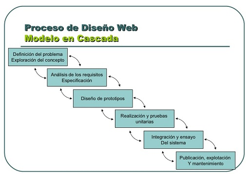

Modelo DeCU
El modelo DeCU es un marco de referencia basado en el enfoque de DCU, que se caracteriza por establecer las pautas que permitan la visualización y gestión correcta del conocimiento, garantizando que el entorno modelado proporcione a sus usuarios información útil y relevante de sus actividades y tareas. Igualmente, este modelo cumple con objetivos específicos como: a) identificar las características más relevantes de los usuarios y de la organización; b) analizar y diseñar prototipos que apoyen al desarrollador a crear entornos más aceptables para cada tipo de usuario; c) proporcionar una solución genérica a cada necesidad particular y general del usuario, y de la organización; y d) establecer los instrumentos necesarios que permitan evaluar y validar el entorno desarrollado.